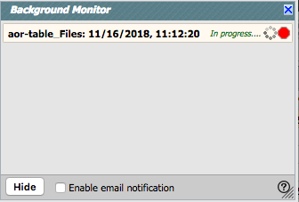
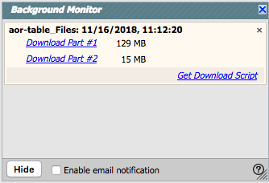

Besides the online help (also available as a PDF), there are also
SOFIA Science Data Archive video tutorials, available at the IRSA YouTube channel  . There is a playlist that
collects together all of the SOFIA videos. Also see the list
of "micro-tutorials" relevant for more than one tool, and the list of
tutorials using more than one tool.
. There is a playlist that
collects together all of the SOFIA videos. Also see the list
of "micro-tutorials" relevant for more than one tool, and the list of
tutorials using more than one tool.
Contents of page/chapter:
+Searching Overview
+Catalogs -- Retrieving and Using Catalogs
+Getting More Help
+Downloading data
+Background Monitor
You specify the radius over which you want to search. You may enter this radius in arcseconds, arcminutes, or degrees; just change the pulldown option accordingly. Caution: pick your units from the pulldown first, and then enter a number; if you enter a number and then select from the pulldown, it will convert your number from the old units to the new units. There are both upper and lower limits to your search radius; it will tell you if you request something too big or too small.
Several additional search options are provided, which are documented in more detail here.
The search window can be retrieved after a search by clicking on the blue "Searches" tab near the top left.
You can choose from any of a wide variety of catalogs (from IRSA or your own disk) to load in preparation for overlaying on your visualized data. You can manipulate catalogs just like any other table in this tool.
In most cases, catalog searching remembers the most recent search you
did and constructs a query that will cover the same area. You may
change the search criteria and select catalogs based first on the
"project" under which they are housed at IRSA, such as 2MASS, IRAS,
WISE, MSX, etc. The options under the "category" and the specific
clickable catalog on the right change according to the project you
have selected. A short description is provided for each of the
catalogs, with links for more information.; an example is here:

Click on "Search" to initiate the search. NOTE THAT the search may take a long time to return, especially if you have asked for a large catalog, and you may think that nothing has happened, but be patient and eventually it will either spin off to the background monitor, or return a tab directly.
Use large search radii with caution! Be sure you understand how many sources you are likely to retrieve. Searches that retrieve more rows will take a long time.
Once you have a catalog loaded, to return to the view where the image
takes up as much of the screen as possible, let your mouse hover over
the image and then click on this 'expand' icon in the upper right of
the image:  A similar expand icon can
be found in the catalog window pane, or the catalog plotting pane, so
that you can view those panes as large as possible.
A similar expand icon can
be found in the catalog window pane, or the catalog plotting pane, so
that you can view those panes as large as possible.
For more information, please see the Catalogs section (or the Tables section for generic table help).
 ). You can also download a PDF version of this
manual; look at the top of the help window. (The PDF may be easier to
search than the web pages; use your PDF reader's search function.)
). You can also download a PDF version of this
manual; look at the top of the help window. (The PDF may be easier to
search than the web pages; use your PDF reader's search function.)
You can submit questions to the IRSA Help Desk  .
.
The IRSA YouTube channel  has lots of short videos about IRSA tools, inclugin specifically SOFIA.
has lots of short videos about IRSA tools, inclugin specifically SOFIA.
A set of frequently asked questions (FAQs) is here.
Found a bug? The known bugs and
issues in this version of the SOFIA Science Data Archive are listed here  . If you think you have found a bug, before
reporting it, please check this list, and read this online help. It
may be a "feature" we already know about. If you have found a new,
real bug then please do contact us via the IRSA Help Desk
. If you think you have found a bug, before
reporting it, please check this list, and read this online help. It
may be a "feature" we already know about. If you have found a new,
real bug then please do contact us via the IRSA Help Desk  . Please include your operating
system version and your browser software and version. If you can,
please also include any specific error message you may have gotten.
(NB: In our testing, copying shortcuts worked on Windows and Linux;
the command-C did not work on Macs, but selecting and clicking the
right mouse button did.)
. Please include your operating
system version and your browser software and version. If you can,
please also include any specific error message you may have gotten.
(NB: In our testing, copying shortcuts worked on Windows and Linux;
the command-C did not work on Macs, but selecting and clicking the
right mouse button did.)
Downloading Data
After deciding which data to download, click the checkboxes to
select specific data files to download (click the checkbox at the top of
the column of checkboxes to 'select all'), and then click "Prepare
Download" to begin the packaging and downloading process. A pop-up
window will appear in order to define exactly what kinds of data you
would like to have packaged up. Clicking "Prepare Download" in the
pop-up initializes this packaging process.
The packaging process spins off into the background monitor, which keeps track of its progress and notifies you when the downloads are complete. You can monitor its progress by clicking on the background monitor link. You can choose to have an email sent to you to let you know when things are ready, even after the packaging process has started. If you have just a few zip files, you can click to download them, but especially if you have many files, you may want to have the SOFIA Science Data Archive generate a downloading script for you to download them all automatically.
Note that you control where the data are saved on your disk through your browser; your browser may be configured to store all downloads in a particular location on your disk. Look for a "Downloads" folder or search for recently modified files.
For more information, please see the Downloads section.
The Background Monitor
The Background Monitor appears as a blue tab (or button) in the upper
right of your window to keep track of the data downloads you have
requested. It actively changes to reflect what it is doing
(e.g., this is preparing a data package:  ) Data
packaging all goes to the Background Monitor; larger catalog requests
can also be sent to the Background Monitor. It
also provides a download
script (optional) if you have more than one package to download.
) Data
packaging all goes to the Background Monitor; larger catalog requests
can also be sent to the Background Monitor. It
also provides a download
script (optional) if you have more than one package to download.
A pop-up window can be called up at any time by clicking the
"Background Monitor" tab. You can watch your data being retrieved.
It will update that window when the data are available for download
and/or overlay on your image, providing a link (or links) for obtaining
the data. It also keeps track of the downloads you have requested
during the same session, and indicates with a checkmark those that you
have already loaded. Remove them from the list by clicking on the blue
'x'.

To stop any query mid-way through, click on the little red octagon ("stop sign") that appears next to the query in the Background Monitor pop-up.
If you forgot to put in your email at the beginning, or if the packaging is taking longer than you expected, you can click on "Enable email notification" from the bottom of the Background Monitor popup and add your email during the packaging process.